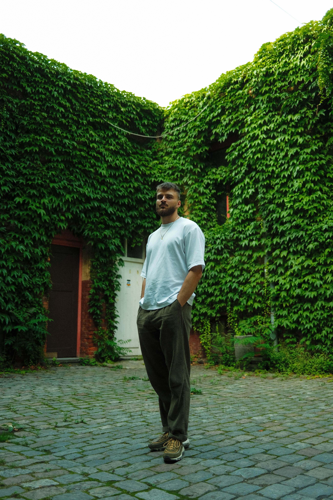

Return

NepaOnDaBeat, a 27-year-old music producer based in Hamburg, Germany, is at the
forefront of the contemporary hip-hop scene, drawing inspiration from influential
producers such as Boi-1da, Oz, and the soulful aesthetics of Dreamville/TDE. His
musical journey is a tapestry woven from soulful samples and intricate drum patterns,
reflecting a diverse range of influences from Toronto's vibrant soundscapes to New
York's gritty authenticity and the timeless allure of soul beats.
highlight credits


NepaOnDaBeat, a 27-year-old music producer based in Hamburg, Germany, is at the
forefront of the contemporary hip-hop scene, drawing inspiration from influential
producers such as Boi-1da, Oz, and the soulful aesthetics of Dreamville/TDE. His
musical journey is a tapestry woven from soulful samples and intricate drum patterns,
reflecting a diverse range of influences from Toronto's vibrant soundscapes to New
York's gritty authenticity and the timeless allure of soul beats.
NepaOnDaBeat's approach to production is marked by meticulous attention to detail,
blending elements from different musical genres and cultures to create a sound that is
uniquely his own. Based in Hamburg, a city known for its thriving music scene,
NepaOnDaBeat explores the intersection of nostalgia and innovation in his music,
crafting tracks that resonate deeply with listeners worldwide.
highlight credits
> 2kbaby - “20k”
> casanova - “redlight”
> melvoni - “battle scars”
> joe trufant - “boys need love too”
> al doms - "sincerely"